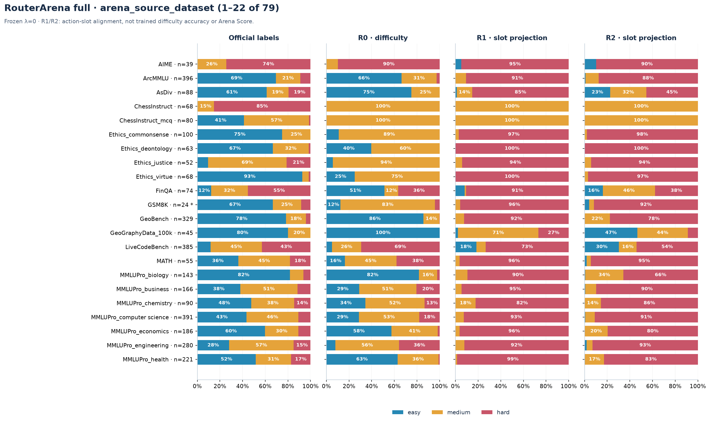
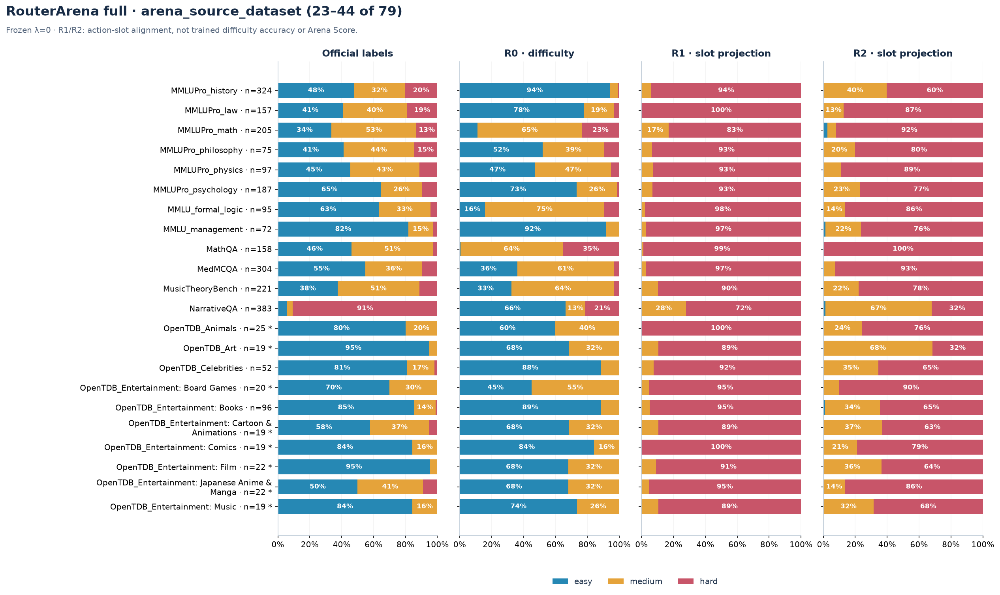
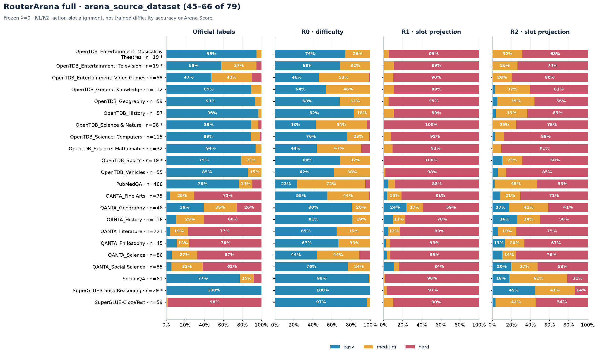
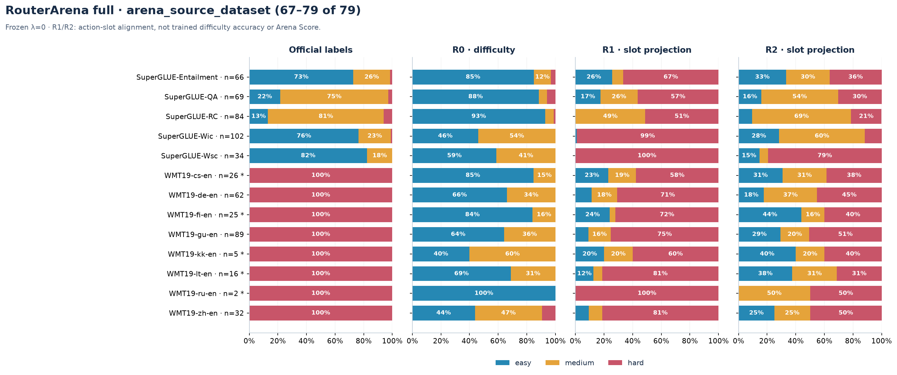
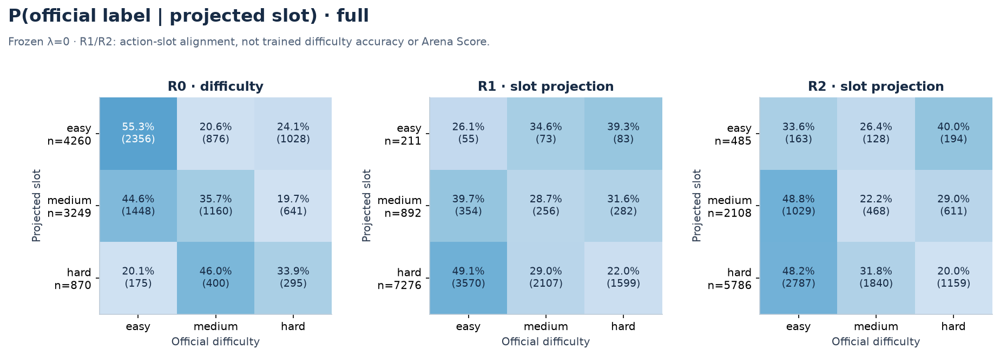

RouterArena · 실제 라벨과
세 모델의 선택 분포
정제된 full 8,379건, 대응하는 robustness 변형 412쌍. λ=0과 512토큰 설정을 고정한 보고서의 저장 예측만 시각화했습니다.
R1·R2의 그래프는 action 슬롯의 라벨 투영입니다.
R0는 easy/medium/hard를 학습한 난이도 분류기입니다. R1·R2는 low/medium/high 선택을 같은 순서의 라벨 이름에 투영한 진단이며, 난이도 분류 성능·실제 서비스 품질·공식 Arena Score를 뜻하지 않습니다.
읽는 방법
카테고리·도메인·출처 그래프의 첫 패널은 공식 난이도 라벨이고, 다음 세 패널은 각 모델의 선택 분포입니다. 모든 카테고리를 페이지로 나눠 표시합니다. 별표(*)는 30건 미만입니다. 조건부 표의 행은 100%이며, 표본이 없는 행은 N/A로 표시합니다.
개발검증의 T1 정답률 기반 난이도와 RouterArena의 공식 Difficulty는 정의가 다릅니다. 정확도 차이를 같은 과제에서의 성능 하락이라고 단정하지 않습니다. 최초 학습 전에 과거 RouterArena 평가를 확인한 이력이 있으므로 완전히 보지 않은 blind test도 아닙니다. R1·R2의 argmax 투영은 세 후보 모델의 실측 성공률이나 현재 운영 라우팅 경로가 아닙니다.
Medium selection은 전체 중 medium 슬롯 선택 비율입니다. Medium-label capture는 공식 medium 질문 중 medium 슬롯을 선택한 비율이며, R0에서만 난이도 medium recall로 해석합니다. Truncated는 원래 입력이 512토큰을 초과한 경우입니다. 두 길이 집단의 카테고리 구성이 다를 수 있어 차이를 토큰 절단의 인과 효과로 해석하지 않습니다.
Robustness는 같은 원본 질문에 대응하는 변형입니다. full과 robustness 건수를 합산하지 않습니다. same은 선택 유지, down/up은 슬롯 순서 하향/상향이며, 품질 개선·악화를 직접 뜻하지 않습니다.

full-arena_source_dataset-01.png · PNG를 누르면 원본을 엽니다.

full-arena_source_dataset-02.png · PNG를 누르면 원본을 엽니다.

full-arena_source_dataset-03.png · PNG를 누르면 원본을 엽니다.

full-arena_source_dataset-04.png · PNG를 누르면 원본을 엽니다.

conditional-on-projected.png · PNG를 누르면 원본을 엽니다.
분모를 포함한 수치
| method |
group |
n |
official_medium_n |
selected_medium_n |
medium_to_medium_n |
official_medium_fraction |
medium_selection_rate |
medium_label_capture_rate |
label_slot_alignment_rate |
truncated_n |
| ordinal |
full |
8379 |
2436 |
3249 |
1160 |
29.1% |
38.8% |
47.6% |
45.5% |
748 |
| ordinal |
not_truncated |
7631 |
2245 |
3021 |
1086 |
29.4% |
39.6% |
48.4% |
46.7% |
0 |
| ordinal |
truncated |
748 |
191 |
228 |
74 |
25.5% |
30.5% |
38.7% |
33.2% |
748 |
| pointwise |
full |
8379 |
2436 |
892 |
256 |
29.1% |
10.6% |
10.5% |
22.8% |
748 |
| pointwise |
not_truncated |
7631 |
2245 |
679 |
192 |
29.4% |
8.9% |
8.6% |
19.7% |
0 |
| pointwise |
truncated |
748 |
191 |
213 |
64 |
25.5% |
28.5% |
33.5% |
54.3% |
748 |
| pairwise |
full |
8379 |
2436 |
2108 |
468 |
29.1% |
25.2% |
19.2% |
21.4% |
748 |
| pairwise |
not_truncated |
7631 |
2245 |
1697 |
377 |
29.4% |
22.2% |
16.8% |
19.9% |
0 |
| pairwise |
truncated |
748 |
191 |
411 |
91 |
25.5% |
54.9% |
47.6% |
36.5% |
748 |
재현과 원본 수치
입력 report seal·파일 SHA, 3개 모델의 sample ID·공식 라벨·카테고리 일치, logits→projection 재구성, 원본 confusion 및 세부 분류 집계, token/truncation과 paired robustness를 확인했습니다. 추가 모델 추론·λ 선택·배포는 수행하지 않았습니다.
단일 seed의 기술 통계입니다. 원시 report manifest SHA: 6bc1be573ebe21a46838be9491f7ad398e36586e1cbf5f526ca899879640dc0a
visuals.json · 출력 manifest